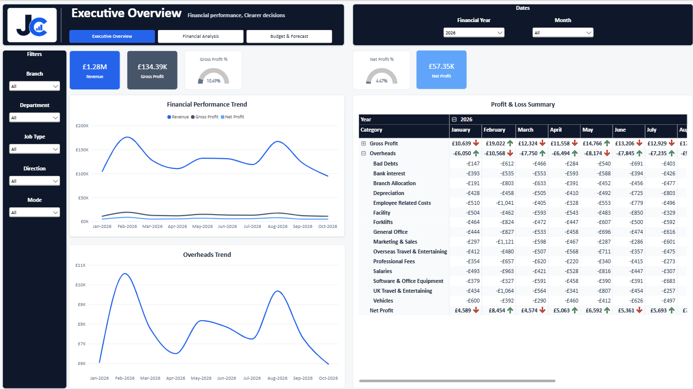
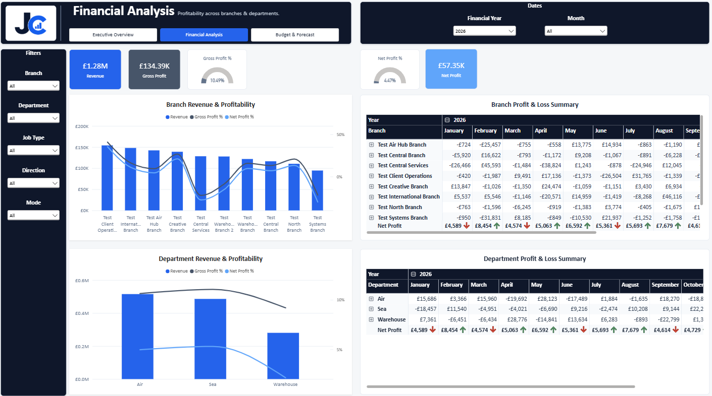
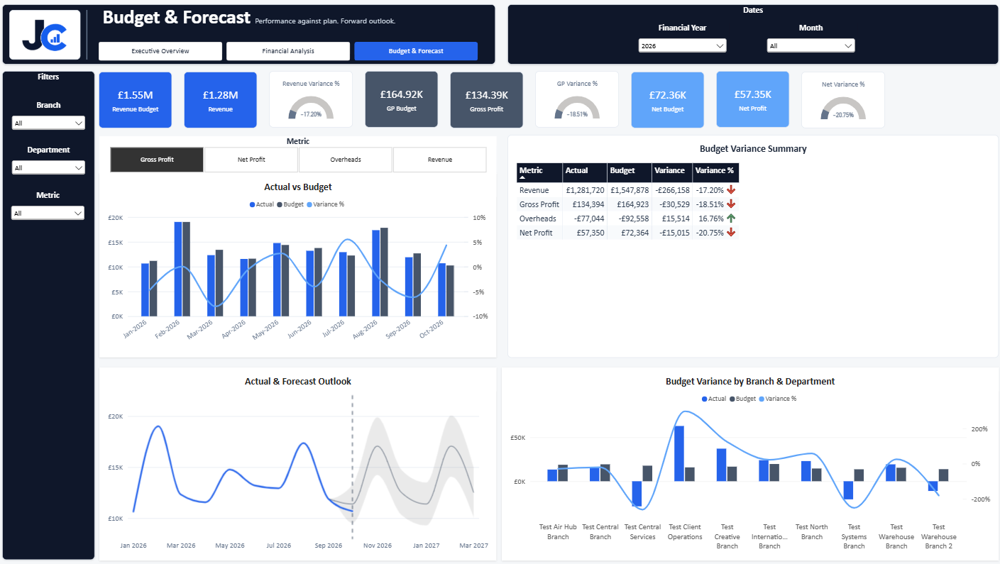
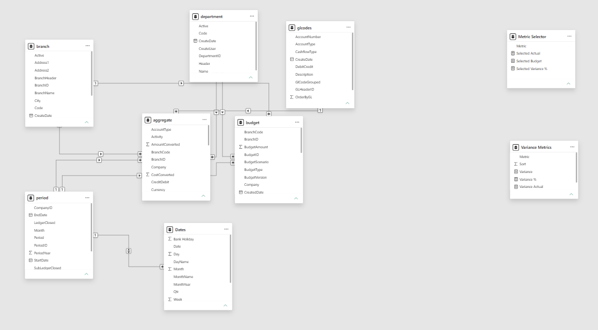

Problem
Accounts prepared a monthly Excel report manually. It could take up to three weeks and did not provide clear month-on-month or year-on-year comparison.
From a three-week manual Excel process to centrally refreshed financial reporting
Accounts prepared a monthly Excel report manually. It could take up to three weeks and did not provide clear month-on-month or year-on-year comparison.
I developed a Power BI solution bringing revenue, gross profit, costs, margins, budgets, branches, departments and forecasting into one reporting model.
The report removed up to three weeks of preparation each month and is used by Accounts, Directors and Management to monitor the business and investigate performance.
The previous monthly process depended on one large Excel report prepared by Accounts. By the time the work was complete, much of the month had already been spent collecting, checking and arranging the information before executive users could use it.
The report focused on the final numbers but offered limited comparison over time. Users could not easily move from the headline position into the branch, department, cost or margin detail behind it.
I replaced the manual report-building process with a Power BI solution that provides one consistent view of financial performance. The model brings together financial transactions, General Ledger codes, Cost of Sales, overheads, budgets, branches, departments and dates.
The report follows a clear path: the Executive Overview shows the overall position, Financial Analysis explains what is driving it, and Budget & Forecast compares actual performance with plan and adds a forward view.

Month-on-month and year-on-year views were added so changes are visible without users manually comparing separate spreadsheets. Conditional formatting helps draw attention to movement in the Profit & Loss.
MoM Indicator =
VAR CurrentValue = [P&L Value]
VAR PreviousValue = [Previous Month Value]
RETURN
SWITCH(
TRUE(),
ISBLANK(PreviousValue), BLANK(),
CurrentValue > PreviousValue, 1,
CurrentValue < PreviousValue, -1,
0
)
Revenue can be compared with Gross Profit and Net Profit %, showing where strong revenue does not translate into strong final profitability once costs are included. This helps users identify high-cost areas and branches or departments with lower margins that may need attention.

A dynamic metric selector allows Revenue, Gross Profit, Overheads and Net Profit to be reviewed against Budget. The separate variance summary keeps the main financial measures visible while the detailed visual responds to the user's selection.

The General Ledger structure classifies transactions into the Revenue, Cost of Sales and overhead sections needed to build the Profit & Loss. A shared Date table supports the monthly, yearly, Budget and forecast comparisons.
Row-level security is implemented so Management can see the branch or department view appropriate to their role while authorised wider users retain the visibility they need.
Up to three weeks of manual report preparation removed each month.
The dashboard has been adopted by Accounts, Directors and Management. It gives the business more detailed and up-to-date reporting, frees the Accounts user from the previous monthly preparation work and supports decisions around cost, branch performance, department performance, margins, Budget and future outlook.
Power BI · DAX · Data Modelling · RLS · Financial Reporting · Profit & Loss · Budget vs Actual · Forecasting · Conditional Formatting